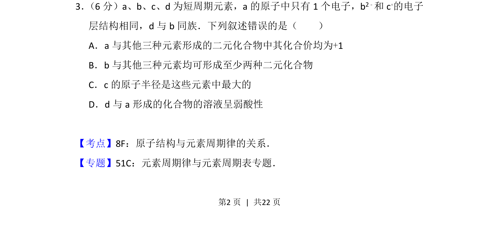
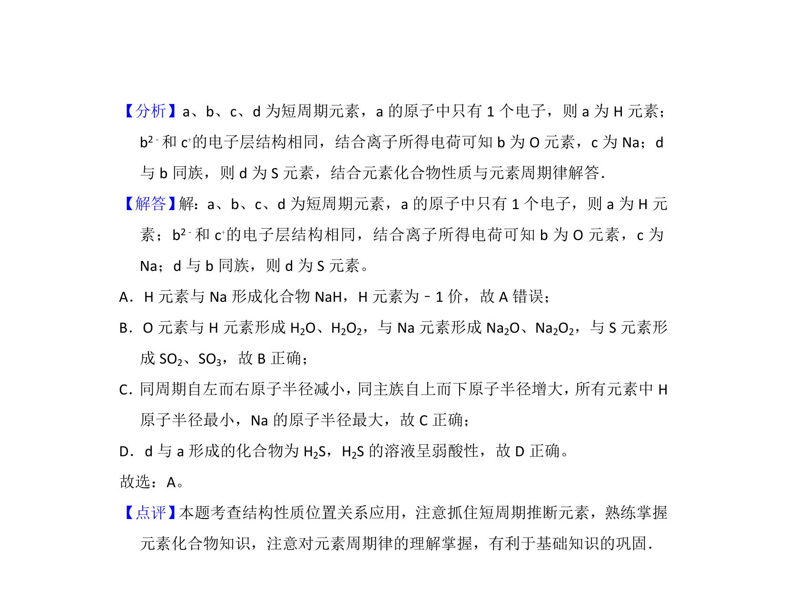

考点：元素推断 原子结构 化合价 二元化合物 原子半径

该题考查短周期元素推断及元素周期律的应用，要求判断原子结构与化合物性质叙述的正误。

📄 原 PDF 第 2 页：
素材/真题/吉林/2008-2024·（吉林）化学高考真题/2016年高考化学试卷（新课标Ⅱ）（解析卷）.pdf
3． （6分）a、b、c、d为短周期元素，a的原子中只有1个电子，b2﹣和c +的电子 层结构相同，d与b同族．下列叙述错误的是（ ） A．a与其他三种元素形成的二元化合物中其化合价均为+1 B．b与其他三种元素均可形成至少两种二元化合物 C．c的原子半径是这些元素中最大的 D．d与a形成的化合物的溶液呈弱酸性
【考点】8F：原子结构与元素周期律的关系．菁优网版权所有 【专题】51C：元素周期律与元素周期表专题．